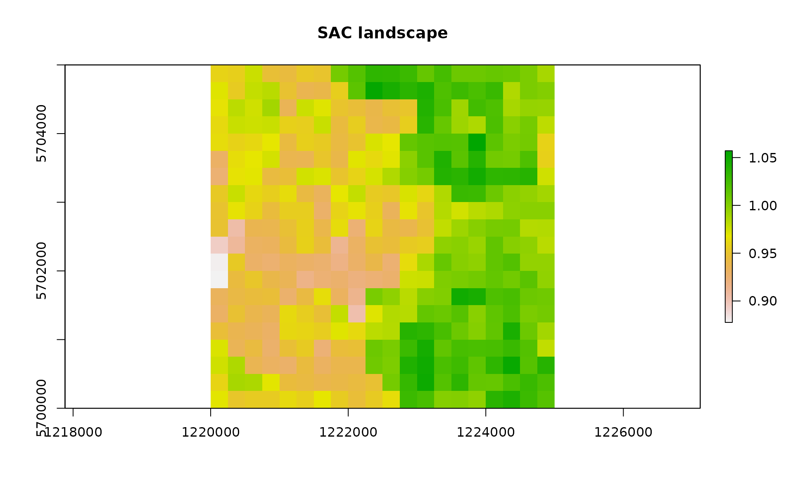
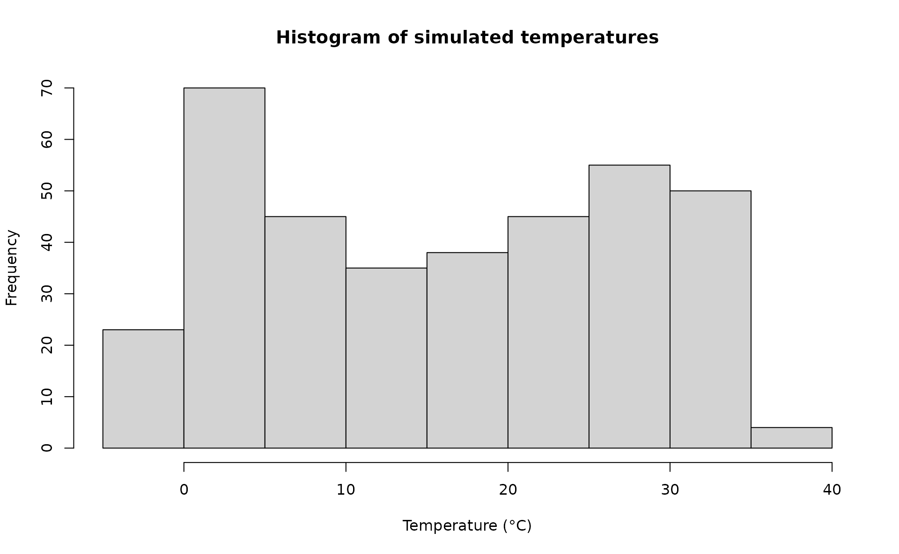
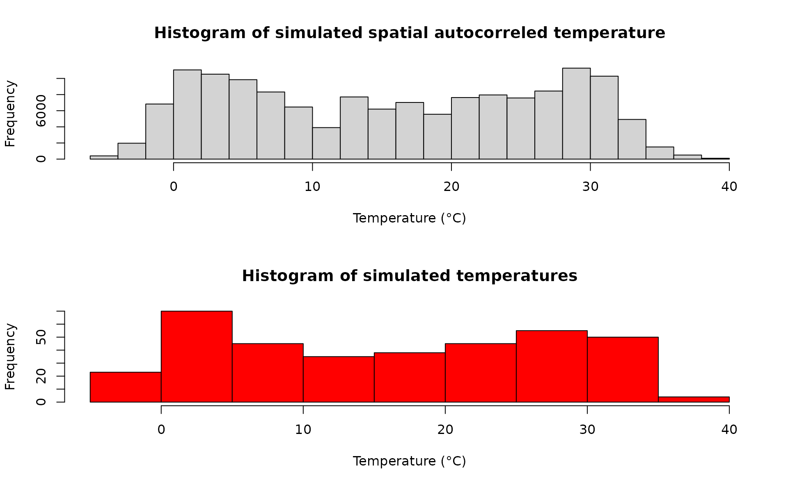
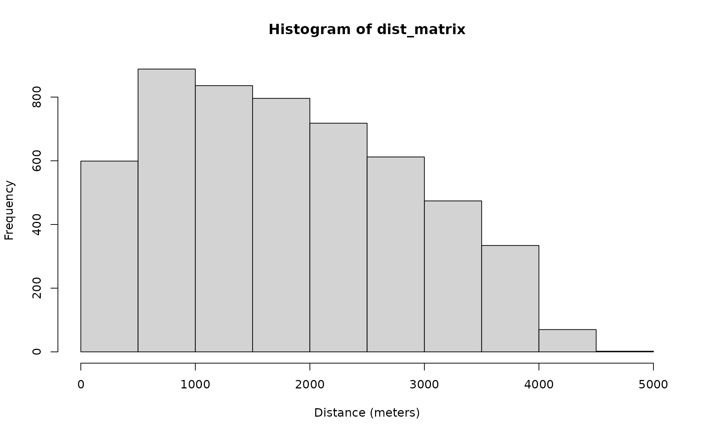
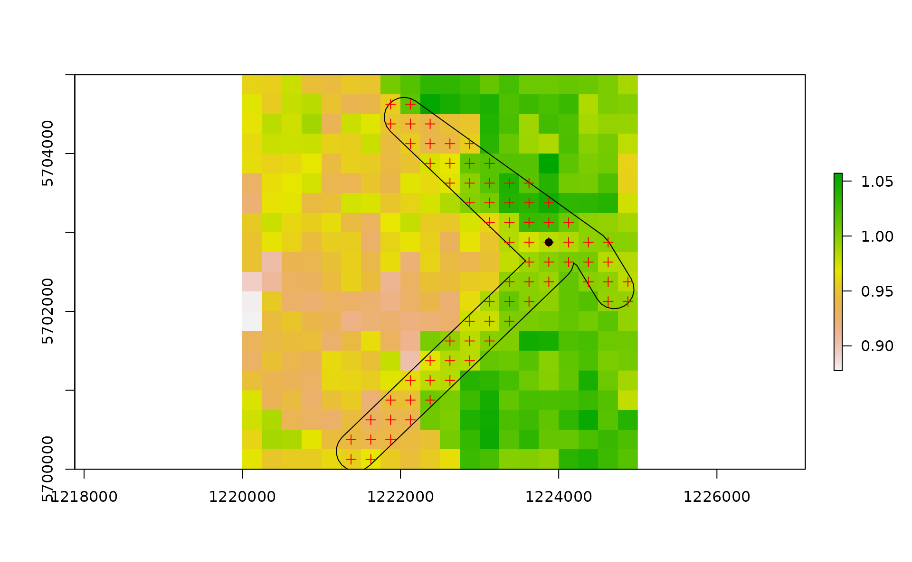
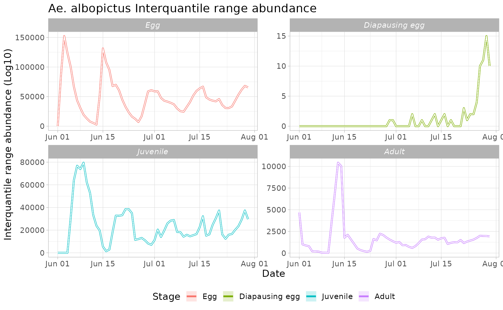
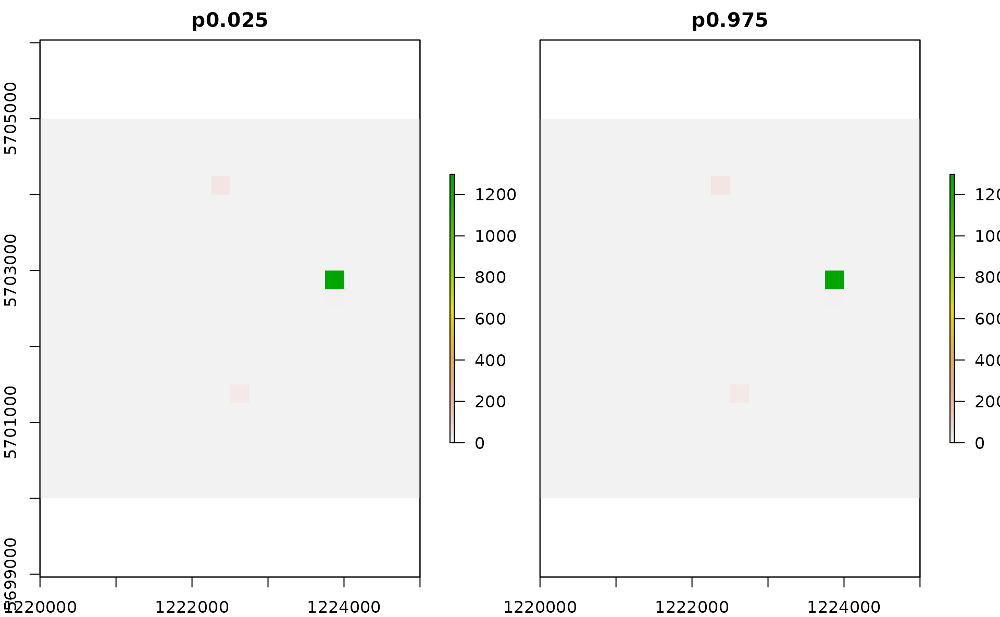
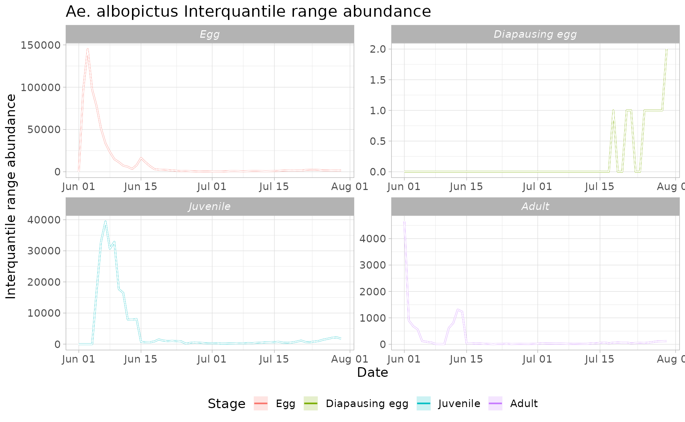

Describing the main features of *dynamAedes*: the local scale model.
dynamAedes: A Unified Mechanistic Model For The Population Dynamics Of Invasive Aedes Mosquitoes.
Daniele Da Re, Sophie 0. Vanwambeke, Matteo Marcantonio
2022-06-27
Source:vignettes/dynamAedes_local.Rmd
dynamAedes_local.RmdThis tutorial explains step-by-step the main features of dynamAedes package, a unified modelling framework for invasive Aedes mosquitoes. Users can apply the stochastic, time-discrete and spatially-explicit population dynamical model initially developed in Da Re et al., (2021) for Aedes aegypti and then expanded for other three species: Ae. albopictus, Ae. japonicus and Ae. koreicus Da Re et al., (under review).
The model is driven by temperature, photoperiod, dispersal and intra-specific larval competition and can be applied to three different spatial scales: punctual, local and regional. These spatial scales consider different degrees of spatial complexity and data availability by accounting for both active and passive dispersal of the modelled mosquito species as well as for the heterogeneity of input temperature data.
We will describe the model applications for Ae. albopictus and for all spatial scales by using a simulated temperature dataset.
#Load packages
require(spatstat)
require(sp)
require(gstat)
require(parallel)
require(eesim)
require(tidyverse)
require(geosphere)
require(ggplot2)
require(rgeos)
require(rgdal)
require(dynamAedes)
Sys.setlocale("LC_TIME", "en_GB.UTF-8") # [1] ""Local scale model
The “local scale” means that the model accounts for both active and passive dispersal of the mosquitoes. With this setting, the model requires three input datasets:
a numerical temperature matrix (in degree Celsius) defined in space and time (space in the rows, time in the columns);
a two-column numerical matrix reporting the coordinates (in meters) of each space-unit (cell);
a numerical distance matrix which reports the distance in meters between the cells connected through a road network.
For the purpose of this tutorial, we will use the following simulated datasets:
- A 5 km lattice grid with 250 m cell size;
- A 1-year long spatially and temporally correlated temperature time series;
- A matrix of distances between cells connected through a simulated road network;
Input data
Create lattice arena
First, we define the physical space into which the introduction of our mosquitoes will happen. We define a squared lattice arena having 5 km side and 250 m resolution (20 columns and 20 rows, 400 total cells).
gridDim <- 20 # 5000m/250 m = 20 columns and rows
xy <- expand.grid(x=1:gridDim, y=1:gridDim)We then add a spatial pattern into the lattice area. This spatial pattern will be used later to add spatial correllation (SAC) to the temperature time series. The spatial autocorrelated pattern will be obtained using a semivariogram model with defined sill (value that the semivarion attains at the range) and range (distance of 0 spatial correlation) and then predicting the semivariogram model over the lattice grid using unconditional Gaussian simulation.
varioMod <- vgm(psill=0.005, range=100, model='Exp') # psill = partial sill = (sill-nugget)
# Set up an additional variable from simple kriging
zDummy <- gstat(formula=z~1,
locations = ~x+y,
dummy=TRUE,
beta=1,
model=varioMod,
nmax=1)
# Generate a randomly autocorrelated predictor data field
set.seed(123)
xyz <- predict(zDummy, newdata=xy, nsim=1)# [using unconditional Gaussian simulation]We generate a spatially autocorrelated raster adding the SA variable (xyz$sim1) to the RasterLayer object. The autocorrelated surface could for example represent the distribution of vegetation cover in a urban landscape.
utm32N <- "+proj=utm +zone=32 +ellps=WGS84 +datum=WGS84 +units=m +no_defs"
r <- raster(nrow=gridDim, ncol=gridDim, crs=utm32N, ext=extent(1220000,1225000, 5700000,5705000))
values(r)=xyz$sim1
plot(r, main="SAC landscape")
df <- data.frame("id"=1:nrow(xyz), coordinates(r))
bbox <- as(extent(r), "SpatialPolygons")
projection(bbox) <- projection(utm32N)
# Store Parameters for autocorrelation
autocorr_factor <- values(r)Simulate temperature data with seasonal trend
We simulate a 1-year temperature time series with seasonal trend. For the time series we consider a mean value of 16°C and standard deviation of 2°C.
ndays = 365*1 #length of the time series in days
set.seed(123)
sim_temp <- create_sims(n_reps = 1,
n = ndays,
central = 16,
sd = 2,
exposure_type = "continuous",
exposure_trend = "cos1", exposure_amp = -1.0,
average_outcome = 12,
outcome_trend = "cos1",
outcome_amp = 0.8,
rr = 1.0055)A visualisation of the distribution of temperature values and temporal trend.
hist(sim_temp[[1]]$x,
xlab="Temperature (°C)",
main="Histogram of simulated temperatures")
plot(sim_temp[[1]]$date,
sim_temp[[1]]$x,
main="Simulated temperatures seasonal trend",
xlab="Date", ylab="Temperature (°C)"
)We can then “expand onto space” the temperature time series by multiplying it with the autocorrelated surface simulated above.
mat <-do.call(rbind, lapply(1:ncell(r), function(x) {
d_t <- sim_temp[[1]]$x*autocorr_factor[[x]]
return(d_t)
}))A comparison between the distribution of the initial temperature time series and autocorrelated temperature surface
par(mfrow=c(2,1))
hist(mat, xlab="Temperature (°C)", main="Histogram of simulated spatial autocorreled temperature")
hist(sim_temp[[1]]$x, xlab="Temperature (°C)", main="Histogram of simulated temperatures", col="red")
Simulate an arbitrary road segment for medium-range dispersal
In the model we have considered the possibility of medium-range passive dispersal. Thus, we will simulate an arbitrary road segment along which adult mosquitoes can disperse passively (i.e., through car traffic).
# Warning in proj4string(obj): CRS object has comment, which is lost in output; in tests, see
# https://cran.r-project.org/web/packages/sp/vignettes/CRS_warnings.htmlAfter defining the road segment we add a “buffer” of 0.05° m around the road segment. Adult mosquitoes that reach or develop into cells comprised in the 0.05° buffer around roads are thus able to undergo passive dispersal.
buff <- buffer(roads, width=250)
crs(buff) <- crs(r)
# Check grid, road segment and buffer
raster::plot(r)
raster::plot(buff, add=T)
raster::plot(roads, add=T, col="red")
Next, we derive a distance matrix between cells comprised in the spatial buffer along the road network. First, we select the cells.
df_sp <- df
coordinates(df_sp)=~x+y
df_sp <- raster::intersect(df_sp,buff)
# Check selected cells
raster::plot(r)
raster::plot(buff, add=T)
raster::plot(df_sp, add=T, col="red")Then, we compute the Euclidean distance (in meters) between each selected cell.
dist_matrix <- as.matrix(dist(coordinates(df_sp)))Model settings
Define a two-column matrix of coordinates to identify each cell in the lattice grid.
cc <- df_temp[,c("x","y")]As for model requirement, the distance matrix must have column names equal to row names.
Moreover, distances in the distance matrix must be rounded to the thousands.
dist_matrix <- apply(dist_matrix,2,function(x) round(x/1000,1)*1000)
# An histogram showing the distribution of distances of cells along the road network
hist(dist_matrix, xlab="Distance (meters)")
Select a cell that intersect roads for introduction:
set.seed(123)
icellcoords <- df[sample(row.names(dist_matrix),1),c(2:3)]
set.seed(123)
icellid <- df[sample(row.names(dist_matrix),1),1]
raster::plot(r)
raster::plot(buff, add=T)
raster::plot(df_sp, add=T, col="red")
raster::plot(SpatialPoints(icellcoords), add=T, col="blue", pch=21)
raster::plot(SpatialPoints(coords=matrix(coordinates(r)[icellid,],ncol=2)), add=T, col="black", pch=21)
We are now left with a few model variables which need to be defined.
## Define cells along roads into which introduce propagules on day 1
intro.vector <- icellid
## Define the day of introduction (June 1st is day 1)
str = "2000-06-01"
## Define the end-day of life cycle (August 1st is the last day)
endr = "2000-08-01"
## Define the number of adult females to be introduced
ia = 5000
## Define the number of model iterations
it = 1 # The higher the number of simulations the better
## Define the number of liters for the larval density-dependent mortality
habitat_liters=100
##Define average trip distance
mypDist=1000
## Define the number of parallel processes (for sequential iterations set nc=1)
cl = 1Finally, let’s prepare the temperature matrix. Float numbers in the temperature matrix would slow the computational speed, thus we first multiply them by 1000 and then transform them in integer numbers.
w <- sapply(df_temp[,as.POSIXlt(str)$yday:as.POSIXlt(endr)$yday], function(x) as.integer(x*1000))Run the model
Running the model with the settings specified in this example takes about 3 minutes.
simout=dynamAedes(species="albopictus",
scale="lc",
ihwv=habitat_liters,
temps.matrix=w,
cells.coords=cc,
lat=50.80,
long=4.44,
road.dist.matrix=dist_matrix,
avgpdisp=mypDist,
intro.cells=intro.vector,
startd=str,
endd=endr,
n.clusters=cl,
iter=it,
intro.adults=ia,
compressed.output=TRUE,
cellsize=250,
maxadisp=mypDist,
dispbins=10,
seeding=TRUE,
verbose=TRUE
)Analyse the results
We first explore the model output structure: the simout object is a nested list.
The first level corresponds to the number of model iterations
print(it)# [1] 1# [1] 1The second level corresponds to the simulated days. So if we inspect the first iteration, we observe that the model has computed 123 days, as we had specified above in the object endr.
length(simout[[1]])# [1] 60The third level corresponds to the amount of individuals for each stage (rows) within each grid cell of the landscape (columns). So if we inspect the first day within the first iteration, we obtain a matrix having:
dim(simout[[1]][[1]])# [1] 4 400We can now use the auxiliary functions of the model to Analyse the results.
Derive probability of a successfull introduction at the end of the simulated period
First, we can retrieve the probability of successful introduction, computed as the proportion of model iterations that resulted in a viable mosquito population at a given date.
psi(input_sim = simout, eval_date = 60)# Days_after_intro p_success stage
# 1 Day 60 1 PopulationWe can also get a spatial output, using the function psi_sp, which require as additional input only the matrix of centroid coordinates of pixels.
plot(psi_sp(coords = cc, input_sim = simout, eval_date = 30, n.clusters=cl))
raster::plot(buff, add=T)
raster::plot(df_sp, add=T, col="red")
raster::plot(SpatialPoints(icellcoords), add=T, col="blue", pch=21)At local scale, the interpretation of this output is more nuanced than for the other scales: a pixel having psi=0 can be a pixel where all the simulations resulted in an extinction or where the species has not yet arrived through dispersal.
Derive abundance 95% CI for each life stage and in each day
We can now compute the interquantile range abundance of the simulated population over the whole landscape using the function adci.
dd <- max(sapply(simout, function(x) length(x)))#retrieve the maximum number of simulated days
egg <- as.data.frame(adci(simout, eval_date=1:dd, breaks=c(0.25,0.50,0.75), st=1))
juv <- as.data.frame(adci(simout, eval_date=1:dd, breaks=c(0.25,0.50,0.75), st=2))
ad <- as.data.frame(adci(simout, eval_date=1:dd, breaks=c(0.25,0.50,0.75), st=3))
eggd <- as.data.frame(adci(simout, eval_date=1:dd, breaks=c(0.25,0.50,0.75), st=4))
# Date to Julian date
strj <- as.numeric(format(as.Date(str),"%j"))
endrj <- as.numeric(format(as.Date(endr),"%j"))-2
egg$myStage='Egg'
egg$Date=seq.Date(sim_temp[[1]]$date[strj], sim_temp[[1]]$date[endrj], by='day')
juv$myStage='Juvenile'
juv$Date=seq.Date(sim_temp[[1]]$date[strj], sim_temp[[1]]$date[endrj], by='day')
ad$myStage='Adult'
ad$Date=seq.Date(sim_temp[[1]]$date[strj], sim_temp[[1]]$date[endrj], by='day')
eggd$myStage='Diapausing egg'
eggd$Date=seq.Date(sim_temp[[1]]$date[strj], sim_temp[[1]]$date[endrj], by='day')
outdf=bind_rows(egg, juv, ad, eggd) %>%
as_tibble()
outdf %>%
mutate(myStage=factor(myStage, levels= c('Egg', 'Diapausing egg', 'Juvenile', 'Adult'))) %>%
ggplot( aes(y=`50%`,x=Date, group=factor(myStage),col=factor(myStage))) +
ggtitle("Ae. albopictus Interquantile range abundance")+
geom_line(size=1.2)+
geom_ribbon(aes(ymin=`25%`,ymax=`75%`,fill=factor(myStage)),
col="white",
alpha=0.2,
outline.type="full")+
labs(x="Date", y="Interquantile range abundance (Log10)", col="Stage", fill="Stage")+
facet_wrap(~myStage, scales = "free")+
theme_light()+
theme(legend.pos="bottom", text = element_text(size=14) , strip.text = element_text(face = "italic"))
We can also have a spatial output of quantiles of the abundance distribution of a given life stage and for a given simulated day by using the function adci_sp and specifiying pixel coordinates. For example for eggs:
 Note that if only a small number of mosquitoes are present in a pixel over many iterations, quantiles may be 0 (especially for low quantiles) and you may see a series of empty rasters!
Number of invaded cells
Compute a summary of the number of invaded cells over model iterations
# 25% 50% 75% day
# V1 2 2 2 1
# V2 2 2 2 2
# V3 4 4 4 3
# V4 4 4 4 4
# V5 3 3 3 5
# V6 4 4 4 6
tail(x)# 25% 50% 75% day
# V25 8 8 8 25
# V26 10 10 10 26
# V27 10 10 10 27
# V28 10 10 10 28
# V29 9 9 9 29
# V30 10 10 10 30Estimates of mosquito dispersal spread (in km2 )
Derive estimates of mosquito dispersal (in km^2) of the simulated mosquito populations (only when scale = “lc”) for any simulated day (in this case for 50 days from start and end of the simulate period).
x=dici(simout, coords=cc, eval_date=seq(1,30,length.out=30), breaks=c(0.25,0.50,0.75), space=FALSE)
plot(`75%`~day,x,type="l",ylab="Population dispersal (in meters) from cell of introduction",xlab="days from introduction")
lines(`50%`~day,x,type="l", col="red")
lines(`25%`~day,x,type="l")